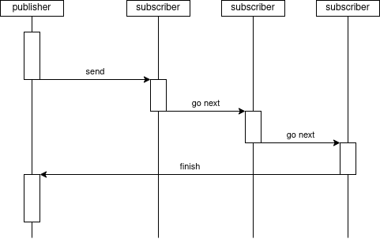

Independency library |
Copyright © 2025 Artem Shapovalov
Use, modifications and distribution is subject to the Boost Software Licence, Version 1.0 (see http://www.boost.org/LICENSE_1_0.txt)
This library provides a ready to use implementation for the message bus pattern, you may also know it as Publish-Subscribe. Frequently, this approach utilized in large projects with lots servers and clients, but it also quite useful inside the single binary. This approach turns your code from the huge mess of chaotic dependencies to the well-structured code that easy to maintain and append.

The key features:
Limitations:
Message bus is just a mechanism to propagate information through your program. Basically you register abonents of this bus and then send messages. Message deliver to each subscriber in order they're registered on the bus. Subscriber extracts the necessary data from this message and doing the stuff. Sending message is the blocking operation: the publisher would be blocked until all of the subscribers finish their job.
The message itself is just a set of key-value pairs. Key is the data identifier, in other words just a number that describes what data is stored in the pair. Available data types:
The reference example provides the most efficient way to use this library.
First step: identify the data exchange model. Here just using the standard macro definitions you may easily describe the message format. Nice to make it in the separate file. In this exaple I'm emulating the dashboard behavior and we have two messages, that translated through the bus:
| Key | Value description |
|---|---|
| 1 | Event type, integer: EVENT_SYSTEM |
| 2 | Event enum, integer: SYSTEM_INIT, SPEED_INDICATOR_INITED, RPM_INDICATOR_INITED, FUEL_INDICATOR_INITED |
| Key | Value description |
|---|---|
| 1 | Event type, integer: EVENT_DATA_RECEIVED |
| 2 | SPEED, float |
| 3 | RPM, float |
| 4 | FUEL_LEVEL, float |
#define EVENT_KEY 1
#define EVENT_SYSTEM 1
#define EVENT_DATA_RECEIVED 2
#define INIT_KEY 2
#define SYSTEM_INIT 1
#define SPEED_INDICATOR_INITED 2
#define RPM_INDICATOR_INITED 3
#define FUEL_INDICATOR_INITED 4
#define SPEED_KEY 2
#define RPM_KEY 3
#define FUEL_LEVEL_KEY 4
Then implement modules, nice to do it in the separate files. Include the Independency library, then declare the class that inherits the handler.
#include <boost/independency.hpp> using namespace boost::independency; class Module : public Handler { public: Module() : Handler(reinterpret_cast<Module*>(this), handler) {} private: static void handler(void* arg, const Message& msg) { Module* that = reinterpret_cast<Module*>(arg); // Do all the stuff here } }
After that you may register this module in some common place, I suggest to do this right in the main function. Declare here the objects of Module, the Bus and subscribe all of the modules.
#include <boost/independency.hpp> #include "Module.hpp" using namespace boost::independency; int main(int argc, char** argv) { Module module1; Module module2; Module module3; Bus bus; bus.reg(module1); bus.reg(module2); bus.reg(module3);
Sending the message is pretty easy. All made to allow you use the temporary objects. The generic message propagation looks like this:
bus.send(Message(Pair(<key>, <value>))
.add(Pair(<key>, <value>)));
The message would automatically destroyed right after ';' as the lifetime of the temporary objects is limited by full expression. Pay attention, value have type and would be good if you specify it explicitly.
Extracting message is simple too. Handlers receive the Message object reference, that provides next functions:
if (msg.get_int(EVENT_KEY) == EVENT_DATA_RECEIVED)
{
that->print_fuel(msg.get_float(FUEL_LEVEL_KEY));
}